iPAS AI應用規劃師 經典題庫
L22401 大數據與機器學習
出題方向
1
大數據與機器學習的關係
2
大數據背景下的機器學習挑戰
3
分散式機器學習框架
4
大數據特徵工程
5
大規模模型訓練與評估
6
特定演算法與大數據
7
大數據與機器學習的應用
#1
★★★★★
大數據對於機器學習模型的主要助益是什麼？
答案解析
大數據的核心價值在於其 3V (或更多V) 特性：大量 (Volume)、高速 (Velocity) 和多樣性 (Variety)。對於機器學習而言，更大規模、更多樣性的數據意味著模型可以接觸到更廣泛的案例和模式，尤其對於複雜模型（如深度學習）來說，足夠的數據是避免過度擬合 (Overfitting)、學習到數據中細微模式並提升模型泛化能力（對新數據的預測能力）的關鍵。雖然大數據也帶來計算挑戰（選項C、D通常不成立），但其提供的豐富資訊是提升模型性能的主要動力。它通常不會簡化演算法（選項A），反而可能需要更複雜的模型來處理。
#2
★★★★
在處理具有非常多特徵（高維度）的大數據集時，機器學習模型可能會遇到什麼主要問題？
答案解析
維度災難是指當數據的維度（特徵數量）增加時，模型性能可能會下降，或者需要指數級增長的數據量才能維持相同性能的現象。在高維空間中，數據點變得非常稀疏（選項B是維度災難的表現之一），距離計算失去意義，模型更容易過度擬合，且計算成本急劇增加。雖然共線性（選項D）也是高維數據可能出現的問題，但維度災難是更根本性的挑戰。擬合不足（選項C）通常是模型過於簡單或數據量不足導致的。
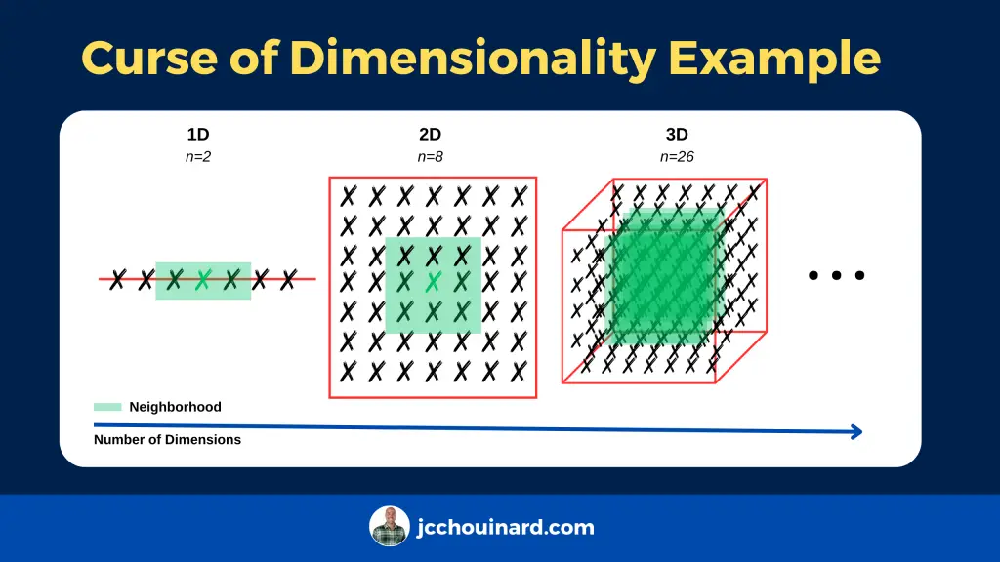
#3
★★★★★
Apache Spark 中的哪個元件是專門用於機器學習的函式庫？
答案解析
Apache Spark 是一個快速、通用的叢集運算系統。它包含多個函式庫：
Spark SQL: 用於結構化數據處理。
Spark Streaming: 用於可擴展、高吞吐量、容錯的即時數據流處理。
MLlib: Spark 的機器學習函式庫，提供了常用的學習演算法和工具，如分類、迴歸、分群、協同過濾、降維以及底層優化原語。
GraphX: 用於圖計算的 API。
因此，MLlib 是 Spark 中專門負責機器學習任務的元件。
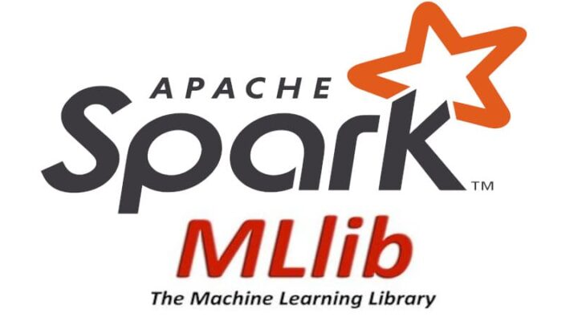
Spark SQL: 用於結構化數據處理。
Spark Streaming: 用於可擴展、高吞吐量、容錯的即時數據流處理。
MLlib: Spark 的機器學習函式庫，提供了常用的學習演算法和工具，如分類、迴歸、分群、協同過濾、降維以及底層優化原語。
GraphX: 用於圖計算的 API。
因此，MLlib 是 Spark 中專門負責機器學習任務的元件。
#4
★★★
下列何者最能體現大數據的「多樣性」(Variety) 特徵對機器學習的影響？
答案解析
大數據的多樣性指的是數據來源和格式的廣泛性，不僅包括傳統的結構化數據（如資料庫表格），還包括大量的半結構化數據（如 JSON、XML）和非結構化數據（如文字、圖像、影片、聲音、感測器數據）。這對機器學習提出了挑戰，但也提供了機會。模型需要具備處理這些不同類型數據的能力，例如使用自然語言處理 (Natural Language Processing, NLP) 技術處理文字，使用電腦視覺 (Computer Vision) 技術處理圖像。整合多模態數據往往能帶來更全面的洞察和更準確的預測。選項 A 主要關聯 Volume，選項 B 關聯 Velocity，選項 D 是大數據和複雜模型的普遍需求。
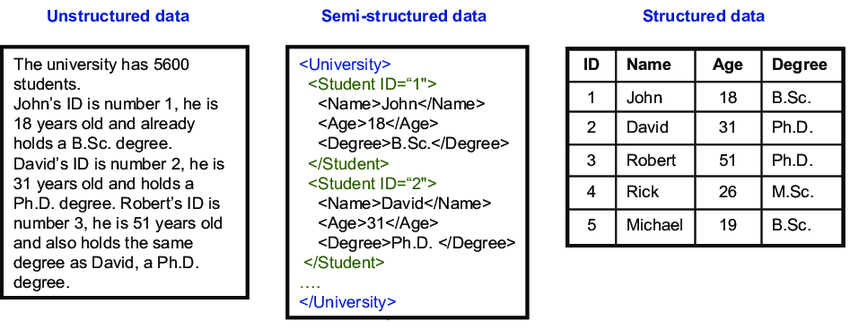
#5
★★★★
在大數據環境下進行特徵工程時，下列哪個考量點特別重要？
答案解析
雖然特徵工程對模型性能至關重要，但在大數據背景下，數據量巨大，特徵維度可能很高。因此，特徵工程方法的計算效率和可擴展性變得非常關鍵。一些在小數據集上可行的複雜特徵轉換（如高階交互項）在大數據集上可能計算成本過高或難以實現。需要選擇能夠在分散式環境下高效執行，並且能夠處理大規模數據的特徵工程技術（例如，使用 Spark MLlib 進行特徵轉換）。選項 A 和 D 不切實際，選項 C 則放棄了特徵工程可能帶來的性能提升。
#6
★★★★
當機器學習模型需要在非常大的數據集上訓練時，哪種訓練策略常被用來提高效率？
答案解析
處理大數據的機器學習訓練需要考慮效率和可擴展性：
分散式訓練: 將數據和/或計算任務分配到多台機器（叢集）上並行處理，是處理無法載入單機記憶體的大數據的關鍵策略。
小批量隨機梯度下降 (Mini-batch SGD): 梯度下降是許多模型（如神經網路）的常用優化演算法。由於無法一次性計算整個大數據集的梯度，通常採用 SGD 或 Mini-batch SGD，即每次只使用一個樣本或一小批樣本來估計梯度並更新模型參數，這大大提高了訓練效率。
只使用小部分數據（選項B）會損失資訊。暴力網格搜索（選項C）在大數據和複雜模型下計算成本極高。將所有數據載入單機（選項D）對於大數據通常不可行。
分散式訓練: 將數據和/或計算任務分配到多台機器（叢集）上並行處理，是處理無法載入單機記憶體的大數據的關鍵策略。
小批量隨機梯度下降 (Mini-batch SGD): 梯度下降是許多模型（如神經網路）的常用優化演算法。由於無法一次性計算整個大數據集的梯度，通常採用 SGD 或 Mini-batch SGD，即每次只使用一個樣本或一小批樣本來估計梯度並更新模型參數，這大大提高了訓練效率。
只使用小部分數據（選項B）會損失資訊。暴力網格搜索（選項C）在大數據和複雜模型下計算成本極高。將所有數據載入單機（選項D）對於大數據通常不可行。

#7
★★★
MapReduce 是一個用於處理大數據的分散式編程模型，其核心思想包含哪兩個主要操作？
答案解析
MapReduce 是 Google 提出的一種用於大規模數據集並行計算的編程模型和框架（Hadoop 中有其開源實現）。它包含兩個核心階段：
1.Map 階段:將輸入數據分割成多個獨立的塊，並對每個塊應用一個 Map 函數，將其轉換成一系列的中間鍵值對 (key-value pairs)。
2.Reduce 階段:將具有相同鍵的中間鍵值對收集起來，並對每個鍵的值集合應用一個 Reduce 函數，進行匯總或處理，最終產生輸出結果。
這個模型允許計算任務在大型叢集上自動並行化和分發。
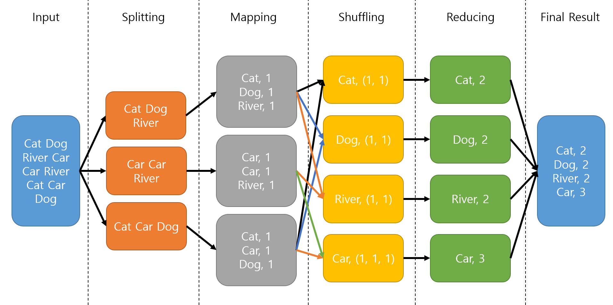
1.Map 階段:將輸入數據分割成多個獨立的塊，並對每個塊應用一個 Map 函數，將其轉換成一系列的中間鍵值對 (key-value pairs)。
2.Reduce 階段:將具有相同鍵的中間鍵值對收集起來，並對每個鍵的值集合應用一個 Reduce 函數，進行匯總或處理，最終產生輸出結果。
這個模型允許計算任務在大型叢集上自動並行化和分發。
#8
★★★★
對於處理和分析大規模圖數據（例如社交網絡、知識圖譜），Apache Spark 提供了哪個專用元件？
答案解析
GraphX 是 Apache Spark 中用於圖 (Graph) 計算和圖平行處理的 API 和引擎。它允許使用者以圖的形式表示數據（節點和邊），並提供了常用的圖演算法（如 PageRank、連通元件、三角計數等）以及靈活的圖操作接口，使得在大規模圖數據上進行分析和計算更加方便高效。

#9
★★★★
線上零售商利用大量用戶的購買歷史和瀏覽行為數據，來為用戶推薦可能感興趣的商品，這主要應用了大數據與機器學習中的哪類技術？
答案解析
推薦系統是結合大數據和機器學習的典型應用。它分析用戶的歷史行為（如購買、評分、瀏覽）以及商品屬性，來預測用戶對他們尚未接觸過的商品的偏好，並向他們推薦最可能感興趣的商品。協同過濾是推薦系統中常用的一種技術，它基於「物以類聚，人以群分」的思想，找出與目標用戶興趣相似的其他用戶，並將這些相似用戶喜歡的商品推薦給目標用戶，或者找出與用戶過去喜歡的商品相似的其他商品。

#10
★★★
大數據的「高速性」(Velocity) 對於機器學習模型的主要挑戰是什麼？
答案解析
大數據的高速性指的是數據產生和傳輸的速度非常快，例如來自感測器、社交媒體、金融交易等的數據流。這對機器學習提出了挑戰，因為模型需要能夠：
1. 即時處理：在數據到達時快速進行處理和分析，而不是等待批次處理。
2. 線上學習 (Online Learning)：能夠根據新到達的數據持續更新模型，以適應數據分佈的變化。
3. 快速預測：能夠在數據流上快速做出預測或決策。
這通常需要使用流處理框架（如 Spark Streaming, Flink）和支援線上學習的演算法。儲存空間（選項A）主要與 Volume 相關。數據類型（選項C）與 Variety 相關。標籤數據缺乏（選項D）是監督式學習的普遍問題。
1. 即時處理：在數據到達時快速進行處理和分析，而不是等待批次處理。
2. 線上學習 (Online Learning)：能夠根據新到達的數據持續更新模型，以適應數據分佈的變化。
3. 快速預測：能夠在數據流上快速做出預測或決策。
這通常需要使用流處理框架（如 Spark Streaming, Flink）和支援線上學習的演算法。儲存空間（選項A）主要與 Volume 相關。數據類型（選項C）與 Variety 相關。標籤數據缺乏（選項D）是監督式學習的普遍問題。
#11
★★★
在評估大數據環境下的機器學習模型性能時，除了準確率 (Accuracy) 外，還需要關注哪些方面？
答案解析
雖然準確率、精確率、召回率等是評估模型預測性能的常用指標，但在大數據環境下，模型的實際可用性還取決於其他因素：
可擴展性 (Scalability): 模型能否有效地處理不斷增長的數據量和維度？
效率 (Efficiency): 模型的訓練和預測所需的時間是否在可接受範圍內？
資源消耗 (Resource Consumption): 模型需要多少計算資源（CPU, GPU, Memory）？
穩健性 (Robustness): 模型對數據雜訊、缺失值、不平衡類別的處理能力如何？
僅僅追求最高的準確率而忽略這些實際部署的考量是不夠的。
可擴展性 (Scalability): 模型能否有效地處理不斷增長的數據量和維度？
效率 (Efficiency): 模型的訓練和預測所需的時間是否在可接受範圍內？
資源消耗 (Resource Consumption): 模型需要多少計算資源（CPU, GPU, Memory）？
穩健性 (Robustness): 模型對數據雜訊、缺失值、不平衡類別的處理能力如何？
僅僅追求最高的準確率而忽略這些實際部署的考量是不夠的。
#12
★★★
哪種機器學習演算法因為其內在的並行性（例如，每棵樹的訓練相對獨立）而比較容易在分散式環境（如 Spark）中實現擴展？
答案解析
隨機森林是一種集成學習方法，它通過訓練多棵獨立的決策樹並結合它們的預測結果。由於每棵樹的訓練過程（包括數據抽樣和特徵抽樣）是相對獨立的，因此可以很容易地將不同樹的訓練任務分配到不同的計算節點上並行執行，使其非常適合在 MapReduce 或 Spark 等分散式框架上進行擴展。相比之下，像 GBDT 這樣的 Boosting 方法，由於後一棵樹的訓練依賴於前一棵樹的結果，其並行性相對較差（雖然也有並行化的變種）。KNN 在預測階段計算量大，SVM 的核函數方法計算複雜度高，都不如隨機森林容易實現大規模並行化。

#13
★★★
在處理大數據中的類別特徵 (Categorical Features) 時，如果某個特徵的基數（唯一值的數量）非常高，使用獨熱編碼 (One-Hot Encoding) 可能會導致什麼問題？
答案解析
獨熱編碼將每個類別值轉換成一個二元向量，其中對應類別的位置為 1，其餘為 0。如果一個類別特徵有 N 個唯一值，獨熱編碼會產生 N 個新的二元特徵。當 N 非常大時（高基數特徵，High-Cardinality Feature），例如用戶 ID 或商品 ID，獨熱編碼會導致特徵維度急劇增加，並且生成的向量非常稀疏（大部分元素為 0），這會顯著增加模型的計算複雜度、記憶體消耗，並可能引發維度災難。在這種情況下，可能需要考慮其他編碼方法，如特徵雜湊 (Feature Hashing) 或嵌入 (Embeddings)。丟失順序關係（選項B）是獨熱編碼的特點，但不一定是問題。

#14
★★★★
相較於 Hadoop MapReduce，Apache Spark 在處理大數據時通常具有更高的性能，其主要原因之一是？
答案解析
Hadoop MapReduce 在每個計算階段之間通常需要將中間結果寫入分散式文件系統 (HDFS)，涉及大量的磁碟讀寫 (I/O)，這成為性能瓶頸。Apache Spark 的設計核心之一是彈性分散式數據集 (Resilient Distributed Dataset, RDD) 以及後來的 DataFrame/Dataset API，它們允許將數據緩存在叢集的記憶體中。對於需要多次迭代或多個步驟處理的任務（如許多機器學習算法），Spark 可以將中間結果保留在記憶體中，避免了頻繁的磁碟 I/O，從而獲得比 MapReduce 快數倍甚至數十倍的性能。

#15
★★★
金融機構利用大數據和機器學習技術分析交易模式，以識別潛在的信用卡盜刷或洗錢活動，這屬於哪方面的應用？
答案解析
分析大量交易數據以識別異常或可疑模式，是風險管理和詐欺偵測領域的關鍵應用。機器學習模型（如異常檢測算法、分類模型）可以從歷史數據中學習正常交易模式和已知詐欺模式，然後對新的交易進行評估，標記出高風險的交易以供進一步調查，從而幫助金融機構減少損失。
#16
★★★
在處理類別不平衡 (Class Imbalance) 的大數據集時（例如，詐欺交易佔比極低），若僅使用準確率 (Accuracy) 作為評估指標，可能會出現什麼問題？
答案解析
當數據集中某一類別的樣本數量遠多於其他類別時，就會出現類別不平衡問題。在這種情況下，準確率可能是一個誤導性的指標。例如，如果 99% 的交易是正常的，1% 是詐欺，一個簡單地將所有交易都預測為「正常」的模型就能達到 99% 的準確率，但它完全沒有識別出任何詐欺交易，對於業務目標（抓出詐欺）來說是無用的。因此，在處理不平衡數據時，需要關注其他指標，如精確率 (Precision)、召回率 (Recall)、F1 分數 (F1 Score)、AUC (Area Under the ROC Curve) 或 PR 曲線下面積 (Area Under the Precision-Recall Curve)，並可能需要採用特殊的處理技術（如重抽樣 Oversampling/Undersampling、代價敏感學習 Cost-Sensitive Learning）。
#17
★★★★
機器學習模型的可解釋性 (Interpretability) 在大數據應用中為何重要？
答案解析
雖然一些複雜的機器學習模型（如深度神經網路）可能是「黑盒子」，難以直接理解其內部決策邏輯，但模型的可解釋性在許多實際應用中非常重要，尤其是在高風險領域（如醫療、金融）。理解模型為何做出特定預測有助於：
建立信任：讓使用者和利害關係人相信模型的預測結果。
偵錯與改進：找出模型可能存在的偏見或錯誤。
確保公平性：檢查模型是否存在對特定群體的歧視。
滿足法規要求：某些法規（如 GDPR）要求對自動化決策提供解釋。
雖然追求可解釋性有時可能需要在模型複雜度（可能影響準確率）之間進行權衡，但其重要性日益凸顯。
建立信任：讓使用者和利害關係人相信模型的預測結果。
偵錯與改進：找出模型可能存在的偏見或錯誤。
確保公平性：檢查模型是否存在對特定群體的歧視。
滿足法規要求：某些法規（如 GDPR）要求對自動化決策提供解釋。
雖然追求可解釋性有時可能需要在模型複雜度（可能影響準確率）之間進行權衡，但其重要性日益凸顯。
#18
★★★
深度學習 (Deep Learning) 模型（如卷積神經網路 CNN、循環神經網路 RNN）在大數據應用中展現強大能力，特別擅長處理哪種類型的數據？
答案解析
深度學習是機器學習的一個分支，其模型（特別是深度神經網路）具有多個處理層，能夠自動從原始數據中學習複雜的、層次化的特徵表示。這使得它們在處理非結構化數據方面表現出色，例如：
卷積神經網路 (Convolutional Neural Network, CNN): 在圖像識別、電腦視覺任務中取得巨大成功。
循環神經網路 (Recurrent Neural Network, RNN及其變體如 LSTM, GRU): 擅長處理序列數據，如自然語言文本、語音、時間序列。
Transformer: 在自然語言處理領域帶來突破，也應用於視覺等領域。
深度學習模型通常需要大量的數據（尤其是標籤數據）來進行訓練，並且模型的可解釋性相對較差（常被視為黑盒子）。
卷積神經網路 (Convolutional Neural Network, CNN): 在圖像識別、電腦視覺任務中取得巨大成功。
循環神經網路 (Recurrent Neural Network, RNN及其變體如 LSTM, GRU): 擅長處理序列數據，如自然語言文本、語音、時間序列。
Transformer: 在自然語言處理領域帶來突破，也應用於視覺等領域。
深度學習模型通常需要大量的數據（尤其是標籤數據）來進行訓練，並且模型的可解釋性相對較差（常被視為黑盒子）。
#19
★★
將原始文本數據轉換成數值向量表示（例如 TF-IDF、Word Embeddings）以便機器學習模型能夠處理，這個過程屬於什麼？
答案解析
機器學習模型通常只能處理數值數據。因此，當處理非數值的原始數據（如文本、圖像、類別變數）時，需要將它們轉換成數值形式的特徵向量。對於文本數據，常見的方法包括詞袋模型 (Bag-of-Words)、TF-IDF (Term Frequency-Inverse Document Frequency) 以及更現代的詞嵌入 (Word Embeddings) 技術（如 Word2Vec, GloVe, FastText）。這個轉換過程是特徵工程和數據預處理的重要環節。
#20
★★★
TensorFlow 和 PyTorch 是目前流行的開源函式庫，它們主要用於哪個領域？
答案解析
TensorFlow (由 Google 開發) 和 PyTorch (由 Facebook 的 AI 研究實驗室開發) 是兩個領先的開源機器學習框架，尤其在深度學習領域被廣泛使用。它們提供了靈活的張量 (Tensor) 計算能力（支援 CPU 和 GPU 加速）、自動微分功能（用於梯度計算和模型訓練）以及豐富的工具和函式庫，方便研究人員和開發者構建、訓練和部署各種規模的機器學習模型，特別是深度神經網路。
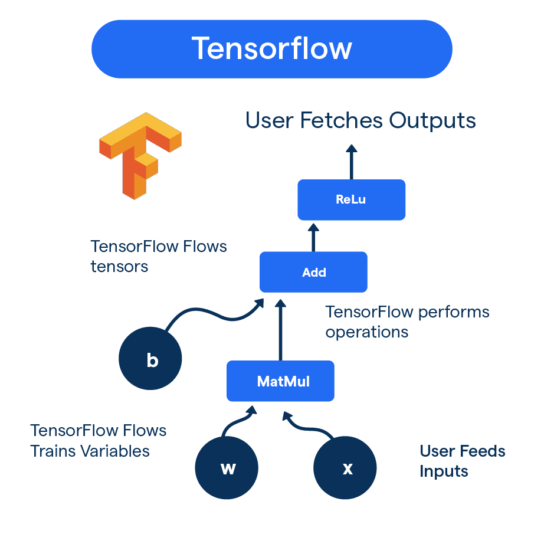
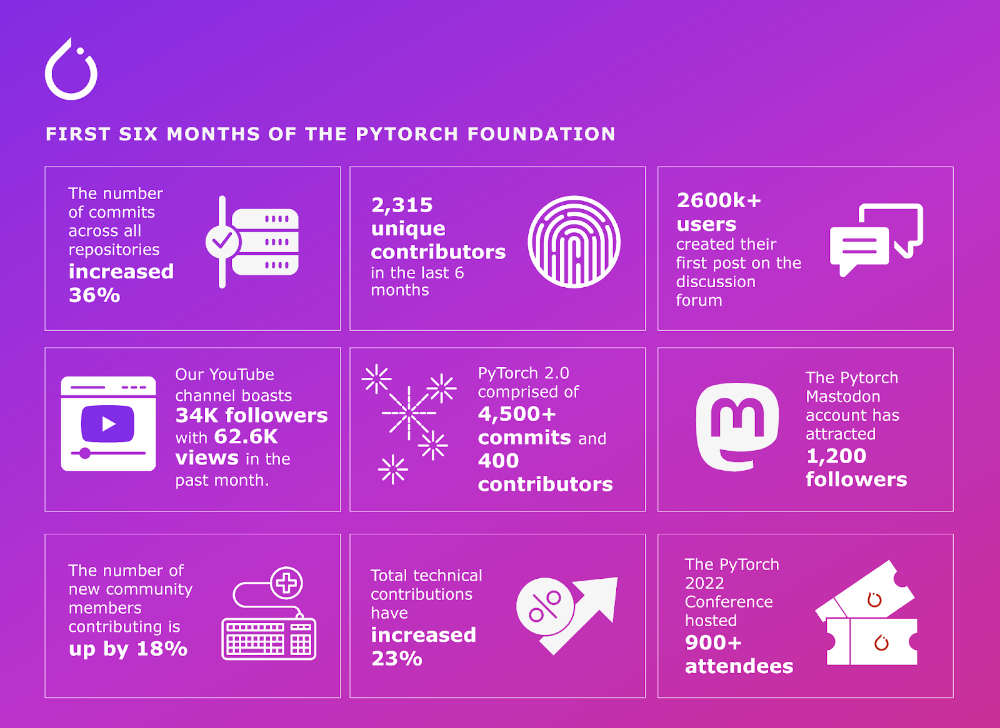
#21
★★★★
「Garbage In, Garbage Out」(GIGO) 原則在 大數據與機器學習 的脈絡下意味著什麼？
答案解析
GIGO 原則強調了輸入數據品質對模型輸出結果的決定性影響。即使擁有最先進的演算法和最強大的計算資源，如果用來訓練模型的數據本身就存在問題（例如，數據錯誤、充滿雜訊、含有系統性偏見、缺失嚴重），那麼基於這些數據學習到的模型也不可能產生準確、可靠或公平的預測。因此，在機器學習流程中，數據清理、驗證和確保數據品質至關重要，尤其是在處理來源複雜多樣的大數據時。
#22
★★★★
交叉驗證 (Cross-Validation) 是一種常用的模型評估技術，其主要目的是什麼？
答案解析
在數據量有限時，簡單地將數據一次性劃分為訓練集和測試集，評估結果可能受到劃分方式的影響而產生偏差。交叉驗證（例如 K-摺交叉驗證 K-Fold Cross-Validation）將數據分成 K 個子集，輪流將其中 K-1 個子集作為訓練集，剩下的 1 個子集作為驗證集，重複 K 次，最後將 K 次的評估結果平均，得到更穩定、更可靠的模型性能估計。這有助於更好地評估模型在未知數據上的泛化能力，並常用於模型選擇和超參數調整。
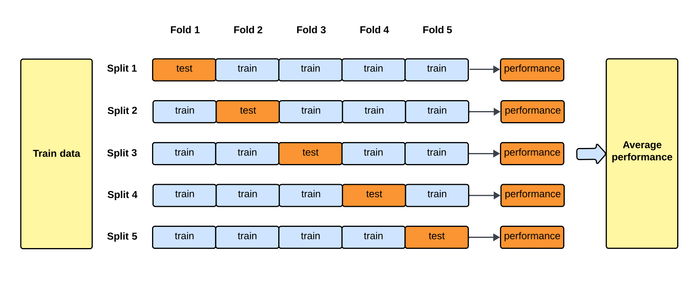
#23
★★★
智慧城市利用來自交通感測器、監視器、市民回報等大量數據，結合機器學習模型來優化交通號誌、預測交通擁堵、規劃公共運輸路線，這是大數據與機器學習在哪個領域的應用？
答案解析
智慧城市是整合資通訊技術 (Information and Communication Technology, ICT) 和物聯網 (Internet of Things, IoT) 技術來管理城市資產和服務的框架。其中，利用從城市基礎設施（如交通、能源、水務）收集的大數據，並應用機器學習進行分析和預測，以改善城市運營效率、提升市民生活品質，是其核心應用之一。題目描述的交通優化即為都市規劃與交通管理領域的典型應用。
#24
★★★
大數據的「真實性」(Veracity) 考量的是數據的哪個方面？
答案解析
Veracity 是大數據除了 3V (Volume, Velocity, Variety) 之外常被提及的另一個重要特性。它關注的是數據的品質、準確性、可信賴度和不確定性。大數據往往來源複雜，可能包含錯誤、雜訊、偏差、矛盾或過時的資訊。在將大數據用於機器學習或決策之前，評估和處理數據的 Veracity 問題（例如，透過數據清理、驗證、來源追溯）非常重要，以避免 GIGO (Garbage In, Garbage Out)。
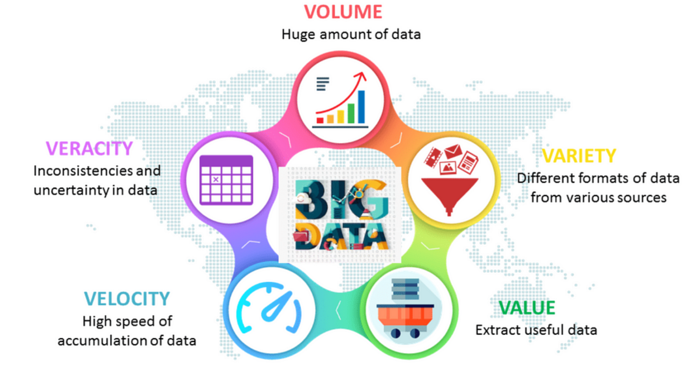
#25
★★
對於許多傳統的機器學習演算法（非深度學習），哪種類型的特徵縮放 (Feature Scaling) 方法常用來處理不同特徵數值範圍差異過大的問題？
答案解析
許多機器學習演算法（如基於距離計算的 KNN、SVM，或使用梯度下降優化的模型）對輸入特徵的尺度敏感。如果不同特徵的數值範圍差異很大（例如，年齡是幾十，收入是幾十萬），數值範圍大的特徵可能會不成比例地主導模型的學習過程。特徵縮放是將所有特徵調整到相似的尺度範圍的預處理步驟。常用的方法包括：
標準化 (Standardization): 將數據轉換為平均值為 0，標準差為 1 的分佈 (Z-score)。
歸一化 (Normalization) / 最小-最大縮放 (Min-Max Scaling): 將數據縮放到 [0, 1] 或 [-1, 1] 的區間。
PCA 是降維方法。獨熱編碼用於類別特徵。特徵選擇是移除不相關或冗餘的特徵。
標準化 (Standardization): 將數據轉換為平均值為 0，標準差為 1 的分佈 (Z-score)。
歸一化 (Normalization) / 最小-最大縮放 (Min-Max Scaling): 將數據縮放到 [0, 1] 或 [-1, 1] 的區間。
PCA 是降維方法。獨熱編碼用於類別特徵。特徵選擇是移除不相關或冗餘的特徵。

#26
★★★
HDFS (Hadoop Distributed File System) 設計的主要目的是什麼？
答案解析
HDFS 是 Apache Hadoop 專案的核心元件之一，是一個設計用於運行在通用硬體 (commodity hardware) 上的分散式檔案系統。它的主要目標是提供高吞吐量的數據訪問，並能可靠地儲存非常大的檔案（通常是 GB 到 TB 等級）。它通過將大檔案分割成塊 (blocks)，並將這些塊複製多份儲存在叢集中的不同節點上來實現容錯和可靠性。它為 MapReduce 和 Spark 等計算框架提供了底層的儲存支持。
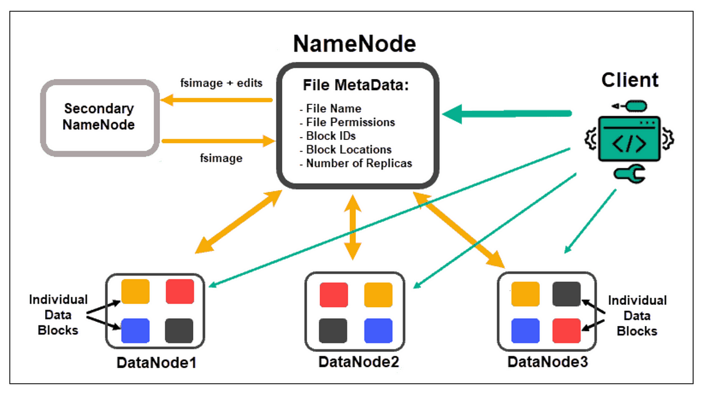
#27
★★★
在機器學習模型的超參數調整 (Hyperparameter Tuning) 中，網格搜索 (Grid Search) 方法的主要缺點是什麼，尤其是在大數據和複雜模型下？
答案解析
網格搜索是一種窮舉的超參數調整方法。它會定義每個超參數的可能取值範圍，然後嘗試所有這些值的組合，並通過交叉驗證等方式評估每種組合的性能，最終選擇性能最好的組合。雖然它能系統性地探索參數空間，但其計算成本會隨著超參數數量和每個參數的取值數量呈指數級增長。對於具有多個超參數的複雜模型或在大型數據集上進行訓練，網格搜索可能會變得非常耗時且計算成本高昂。隨機搜索 (Random Search) 或貝葉斯優化 (Bayesian Optimization) 是更高效的替代方案。

#28
★★
為什麼說機器學習是從大數據中提取「價值」(Value) 的關鍵技術？
答案解析
大數據本身只是原始材料，其潛在的巨大價值需要通過分析才能被挖掘出來。機器學習提供了一套強大的工具和技術，能夠自動地從規模龐大、結構複雜、類型多樣的數據中學習規律、發現模式、做出預測。這些從數據中提取出來的洞察和預測能力（即「價值」）可以被應用於改進決策、優化流程、開發新產品或服務等，從而為企業或組織帶來實際效益。
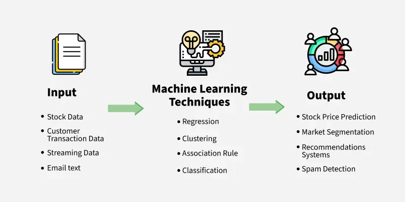
#29
★★★★
自然語言處理 (Natural Language Processing, NLP) 技術結合大數據分析，最常用於下列哪個應用場景？
答案解析
網路上存在著海量的文本數據，如社交媒體、新聞網站、論壇、產品評論等。自然語言處理 (NLP) 技術使得機器能夠理解和處理這些人類語言數據。結合大數據分析，NLP 可以被用來進行大規模的情感分析、主題模型、實體識別、趨勢挖掘等，從而幫助企業或組織了解消費者意見、監測品牌形象、發現熱點話題、預測市場動向。選項 C 是 NLP 在大數據分析中最典型的應用之一。選項 A 可能部分利用 NLP 分析新聞，但主要依賴金融數據。選項 B 屬電腦視覺。選項 D 主要依賴供應鏈數據。
#30
★★★
在處理時間序列大數據時，創建例如「過去 7 天的平均銷售額」或「與上個月同期的銷售額差異」這類特徵，屬於哪種特徵工程技術？
答案解析
處理時間序列數據時，常用的特徵工程方法包括：
滯後特徵 (Lag Features): 使用過去某個時間點的值作為當前預測的特徵（例如，用昨天的銷售額預測今天的銷售額）。
窗口特徵 (Window Features): 在一個滑動的時間窗口內計算統計量（如平均值、最大值、最小值、標準差）作為特徵（例如，過去 7 天的平均銷售額）。
差分 (Differencing): 計算相鄰時間點值的差異，以穩定序列或提取變化訊息（例如，與上個月同期的銷售額差異）。
這些方法有助於模型捕捉時間序列中的趨勢、季節性和自相關性。
滯後特徵 (Lag Features): 使用過去某個時間點的值作為當前預測的特徵（例如，用昨天的銷售額預測今天的銷售額）。
窗口特徵 (Window Features): 在一個滑動的時間窗口內計算統計量（如平均值、最大值、最小值、標準差）作為特徵（例如，過去 7 天的平均銷售額）。
差分 (Differencing): 計算相鄰時間點值的差異，以穩定序列或提取變化訊息（例如，與上個月同期的銷售額差異）。
這些方法有助於模型捕捉時間序列中的趨勢、季節性和自相關性。


#31
★★★
「資料漂移」(Data Drift) 或「概念漂移」(Concept Drift) 是指什麼現象，會對已部署的機器學習模型產生什麼影響？
答案解析
機器學習模型通常是在某個時間點的數據上訓練的。然而，真實世界的數據是動態變化的。
資料漂移 (Data Drift): 指模型輸入特徵的統計特性隨時間變化（例如，用戶年齡結構變化）。
概念漂移 (Concept Drift): 指輸入特徵與目標變數之間的潛在關係隨時間變化（例如，用戶的購買偏好改變）。
當發生這些漂移時，原本訓練好的模型可能不再適用於新的數據，導致其預測性能逐漸下降。因此，需要定期監控模型性能和數據分佈，並在必要時重新訓練或更新模型。這是 MLOps (Machine Learning Operations) 關注的重要問題。
資料漂移 (Data Drift): 指模型輸入特徵的統計特性隨時間變化（例如，用戶年齡結構變化）。
概念漂移 (Concept Drift): 指輸入特徵與目標變數之間的潛在關係隨時間變化（例如，用戶的購買偏好改變）。
當發生這些漂移時，原本訓練好的模型可能不再適用於新的數據，導致其預測性能逐漸下降。因此，需要定期監控模型性能和數據分佈，並在必要時重新訓練或更新模型。這是 MLOps (Machine Learning Operations) 關注的重要問題。


#32
★★★
哪種非監督式學習方法常用於大數據的降維，通過找到一組能解釋數據最大變異性的正交軸（主成分）來實現？
答案解析
主成分分析 (PCA) 是一種廣泛使用的線性降維技術。它通過數學變換（特徵值分解或奇異值分解）找到數據協方差矩陣的特徵向量，這些特徵向量代表了數據變異最大的方向（主成分）。通過選擇並保留前 k 個最重要的主成分（對應最大的特徵值），可以將原始高維數據投影到一個較低維度的子空間，同時盡可能多地保留原始數據的變異性（資訊）。由於它不依賴標籤，屬於非監督式學習。

#33
★★
YARN (Yet Another Resource Negotiator) 在 Hadoop 生態系統中的主要作用是什麼？
答案解析
YARN 是 Hadoop 2.x 版本引入的關鍵元件，其核心功能是叢集資源管理和任務調度。它將 MapReduce 1.x 中 JobTracker 的資源管理和任務監控功能分離開來。YARN 包含一個全局的 ResourceManager 和每個節點上的 NodeManager，負責管理叢集中的 CPU、記憶體等資源，並根據應用程式（如 MapReduce, Spark, Flink 等）的需求進行分配和調度。這使得 Hadoop 叢集可以更有效地運行多種不同的計算框架。HDFS 負責儲存（選項A），MapReduce 是計算模型（選項C）。
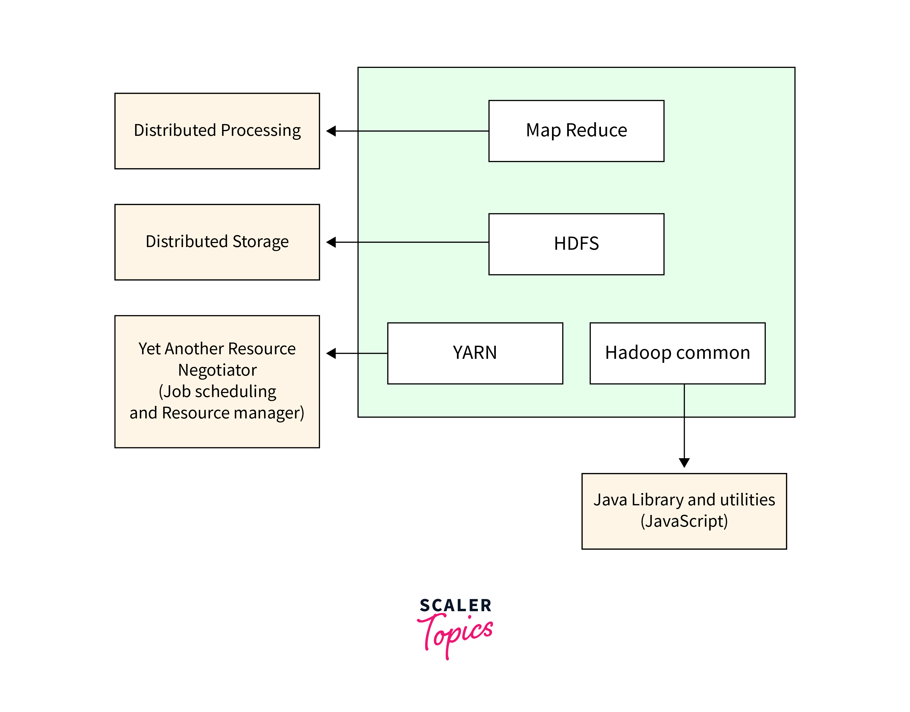
#34
★★
模型序列化 (Model Serialization) 在機器學習流程中的主要目的是什麼？
答案解析
訓練一個機器學習模型（尤其是在大數據上）可能非常耗時耗力。模型序列化是將訓練完成的模型物件（包含其結構和學習到的參數）轉換成一種可以儲存（例如，寫入檔案）或傳輸的格式的過程。之後，可以從這個儲存的格式中反序列化 (Deserialization)，將模型重新加載到記憶體中，而無需重新訓練。這對於保存模型狀態、在不同環境中部署模型、或者與他人分享模型至關重要。常見的序列化格式有 pickle (Python)、joblib、ONNX 等。

#35
★★★
自動駕駛汽車利用來自光達 (LiDAR)、攝影機、雷達等多種感測器的大量數據，結合機器學習模型來感知周圍環境、做出駕駛決策，這體現了大數據與機器學習在哪方面的結合？
答案解析
自動駕駛是整合大數據與機器學習的複雜應用，涉及多個方面：
多模態數據處理：需要處理來自不同感測器（光達、視覺、雷達）的多種數據類型。
感測器融合：需要將來自不同感測器的資訊進行融合，以獲得對環境更全面、更可靠的感知。
即時決策：需要基於感測器數據和學習到的模型，在極短的時間內做出安全的駕駛決策（如轉向、加速、煞車）。
這些都需要處理海量數據（大數據的 Volume 和 Velocity）並利用機器學習（特別是深度學習）模型來進行感知、預測和決策。因此，選項 D 是最全面的描述。
多模態數據處理：需要處理來自不同感測器（光達、視覺、雷達）的多種數據類型。
感測器融合：需要將來自不同感測器的資訊進行融合，以獲得對環境更全面、更可靠的感知。
即時決策：需要基於感測器數據和學習到的模型，在極短的時間內做出安全的駕駛決策（如轉向、加速、煞車）。
這些都需要處理海量數據（大數據的 Volume 和 Velocity）並利用機器學習（特別是深度學習）模型來進行感知、預測和決策。因此，選項 D 是最全面的描述。
#36
★★★★
特徵選擇 (Feature Selection) 的主要目標是什麼？
答案解析
特徵選擇是特徵工程的一部分，其目標是從原始的大量特徵中，挑選出一個最優的子集來用於模型訓練。移除不相關或冗餘的特徵可以帶來多種好處：
簡化模型：使模型更容易理解和解釋。
縮短訓練時間：減少計算量。
降低過度擬合風險：減少雜訊和不必要的複雜度。
提升模型性能：有時移除不相關特徵可以提高模型的泛化能力。
常見的特徵選擇方法包括過濾法 (Filter)、包裹法 (Wrapper) 和嵌入法 (Embedded)。選項 B 是特徵創建，選項 C 是特徵縮放，選項 D 是降維。
簡化模型：使模型更容易理解和解釋。
縮短訓練時間：減少計算量。
降低過度擬合風險：減少雜訊和不必要的複雜度。
提升模型性能：有時移除不相關特徵可以提高模型的泛化能力。
常見的特徵選擇方法包括過濾法 (Filter)、包裹法 (Wrapper) 和嵌入法 (Embedded)。選項 B 是特徵創建，選項 C 是特徵縮放，選項 D 是降維。

#37
★★★
哪種監督式學習演算法通過構建一系列「弱學習器」（通常是簡單的決策樹），並逐步加權或聚焦於先前被錯誤分類的樣本，來最終組合成一個「強學習器」？
#38
★★★
線上 A/B 測試是一種常用於評估不同版本（例如，網頁設計、推薦算法）效果的方法，在大數據環境下進行 A/B 測試需要特別注意什麼？
答案解析
A/B 測試（或更一般的多變量測試）是基於數據驅動決策的重要方法。在大數據或線上環境中成功執行 A/B 測試的關鍵在於：
隨機化 (Randomization): 必須將用戶（流量）隨機、無偏地分配到對照組 (A) 和實驗組 (B)，以確保組間的可比性。
樣本量 (Sample Size): 需要收集足夠的數據量，使得觀察到的效果差異具有統計顯著性 (Statistical Significance)，能夠排除隨機波動的影響。
明確的指標 (Metrics): 需要預先定義好用來衡量效果的關鍵指標（例如，點擊率、轉換率）。
監控與分析 (Monitoring & Analysis): 監控實驗過程，並在結束後使用恰當的統計方法分析結果。
雖然大數據使得測試大量用戶成為可能，但仍需謹慎設計和執行以獲得可靠結論。同時測試過多版本（選項B）會增加複雜性並需要更大流量。
隨機化 (Randomization): 必須將用戶（流量）隨機、無偏地分配到對照組 (A) 和實驗組 (B)，以確保組間的可比性。
樣本量 (Sample Size): 需要收集足夠的數據量，使得觀察到的效果差異具有統計顯著性 (Statistical Significance)，能夠排除隨機波動的影響。
明確的指標 (Metrics): 需要預先定義好用來衡量效果的關鍵指標（例如，點擊率、轉換率）。
監控與分析 (Monitoring & Analysis): 監控實驗過程，並在結束後使用恰當的統計方法分析結果。
雖然大數據使得測試大量用戶成為可能，但仍需謹慎設計和執行以獲得可靠結論。同時測試過多版本（選項B）會增加複雜性並需要更大流量。
#39
★★★
下列哪個選項描述了監督式學習 (Supervised Learning)？
答案解析
機器學習的三種主要範式：
監督式學習 (Supervised Learning): 提供模型帶有標籤（輸入-輸出對）的數據進行訓練，目標是學習一個從輸入到輸出的映射函數。常用於分類和迴歸問題。（選項 A）
非監督式學習 (Unsupervised Learning): 提供模型未標籤的數據，讓模型自行發現數據中的潛在結構、模式或關係。常用於分群、降維、關聯規則挖掘。（選項 B）
強化學習 (Reinforcement Learning): 模型（代理 Agent）透過與環境互動，根據獲得的獎勵或懲罰來學習最佳的行動策略。（選項 C）
選項 D 描述的是基於規則的系統，不屬於典型的機器學習。
監督式學習 (Supervised Learning): 提供模型帶有標籤（輸入-輸出對）的數據進行訓練，目標是學習一個從輸入到輸出的映射函數。常用於分類和迴歸問題。（選項 A）
非監督式學習 (Unsupervised Learning): 提供模型未標籤的數據，讓模型自行發現數據中的潛在結構、模式或關係。常用於分群、降維、關聯規則挖掘。（選項 B）
強化學習 (Reinforcement Learning): 模型（代理 Agent）透過與環境互動，根據獲得的獎勵或懲罰來學習最佳的行動策略。（選項 C）
選項 D 描述的是基於規則的系統，不屬於典型的機器學習。
#40
★★★★
與傳統的關聯式數據庫相比，NoSQL (Not Only SQL) 數據庫在大數據場景下的主要優勢通常包括？
答案解析
NoSQL 數據庫是為了應對大數據時代的需求而設計的，與傳統關聯式數據庫 (RDBMS) 相比，它們通常具有以下特點和優勢：
水平擴展性: 設計上更容易通過增加更多伺服器來擴展儲存容量和處理能力。
靈活的數據模型: 支持多種數據模型（如鍵值對、文件、列式、圖），能更好地處理半結構化和非結構化數據。
靈活的綱要: 通常不需要預先嚴格定義數據綱要，允許數據結構隨時變化 (Schema-on-Read 或 schemaless)。
高可用性和性能: 通常針對讀寫性能和可用性進行優化。
相對地，傳統 RDBMS 在 ACID 事務保證、數據一致性和標準 SQL 查詢方面更有優勢。NoSQL 數據庫通常犧牲部分一致性（遵循 BASE 原則 - Basically Available, Soft state, Eventually consistent）來換取更高的可用性和擴展性。
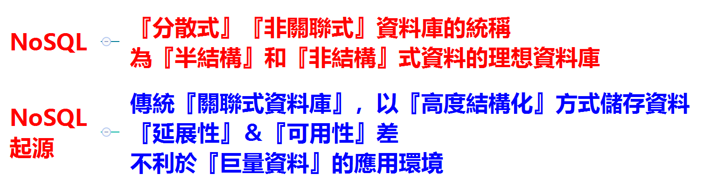
水平擴展性: 設計上更容易通過增加更多伺服器來擴展儲存容量和處理能力。
靈活的數據模型: 支持多種數據模型（如鍵值對、文件、列式、圖），能更好地處理半結構化和非結構化數據。
靈活的綱要: 通常不需要預先嚴格定義數據綱要，允許數據結構隨時變化 (Schema-on-Read 或 schemaless)。
高可用性和性能: 通常針對讀寫性能和可用性進行優化。
相對地，傳統 RDBMS 在 ACID 事務保證、數據一致性和標準 SQL 查詢方面更有優勢。NoSQL 數據庫通常犧牲部分一致性（遵循 BASE 原則 - Basically Available, Soft state, Eventually consistent）來換取更高的可用性和擴展性。
#41
★★
醫療機構分析大量電子病歷 (Electronic Health Records, EHR) 數據，利用機器學習模型預測特定疾病的發病風險或輔助診斷，這是大數據與機器學習在哪個領域的應用？
答案解析
利用電子病歷、醫學影像、基因序列、穿戴式裝置感測器等產生的海量健康相關數據，結合機器學習技術，可以在疾病預防、早期診斷、治療方案優化、藥物研發、流行病監測等多個方面帶來突破，是智慧醫療和精準醫療發展的核心驅動力。分析 EHR 數據進行風險預測和輔助診斷是其典型應用。
#42
★★★
「特徵雜湊」(Feature Hashing) 是一種處理高基數類別特徵的技術，它的主要優點是什麼？
答案解析
特徵雜湊（也稱 Hashing Trick）是一種將高維、稀疏特徵（特別是高基數類別特徵或文本特徵）映射到較低維度、固定大小向量的技術。它通過一個雜湊函數將原始特徵（如類別名稱）轉換為一個整數索引，這個索引對應於輸出向量中的某個維度。其主要優點是：
維度控制：無論原始特徵有多少個，都可以將其映射到預先設定好的固定維度，有效降低了維度。
無需預先統計詞典：不需要像獨熱編碼那樣先掃描一遍數據來構建所有類別的詞典。
適合線上學習：對於流式數據，可以方便地處理新出現的類別。
其缺點是可能發生雜湊碰撞（不同的原始特徵被映射到同一個索引），導致資訊損失，並且生成的特徵缺乏可解釋性。
維度控制：無論原始特徵有多少個，都可以將其映射到預先設定好的固定維度，有效降低了維度。
無需預先統計詞典：不需要像獨熱編碼那樣先掃描一遍數據來構建所有類別的詞典。
適合線上學習：對於流式數據，可以方便地處理新出現的類別。
其缺點是可能發生雜湊碰撞（不同的原始特徵被映射到同一個索引），導致資訊損失，並且生成的特徵缺乏可解釋性。

#43
★★
在機器學習專案中，「數據洩漏」(Data Leakage) 是指什麼情況？
答案解析
數據洩漏是指在模型訓練時，使用了在模型實際部署進行預測時無法獲得的訊息。這會導致模型在測試集或驗證集上表現出虛高的性能，因為它實際上「偷看」了答案或未來的訊息。常見的數據洩漏形式包括：
將測試集的資訊用於訓練集的預處理（例如，使用包含測試集數據計算的平均值和標準差來標準化訓練集）。
特徵工程中使用了目標變數或與目標變數高度相關但在預測時不可用的變數。
時間序列數據中，使用了未來的數據來預測過去。
避免數據洩漏對於獲得可靠的模型性能評估至關重要。選項 A 描述的是數據安全問題。
將測試集的資訊用於訓練集的預處理（例如，使用包含測試集數據計算的平均值和標準差來標準化訓練集）。
特徵工程中使用了目標變數或與目標變數高度相關但在預測時不可用的變數。
時間序列數據中，使用了未來的數據來預測過去。
避免數據洩漏對於獲得可靠的模型性能評估至關重要。選項 A 描述的是數據安全問題。
#44
★★★
哪種機器學習演算法常用於基於用戶過去的評分數據，來預測用戶對未評分物品的可能評分，常用於推薦系統？
答案解析
矩陣分解是協同過濾推薦系統中最常用和最成功的技術之一。它試圖將稀疏的用戶-物品評分矩陣分解為兩個或多個較低維度的潛在因子矩陣（一個代表用戶的潛在偏好，一個代表物品的潛在屬性）。通過學習這些潛在因子，模型可以估計用戶對未評分物品的評分，從而進行推薦。常用的矩陣分解演算法包括奇異值分解 (Singular Value Decomposition, SVD) 及其變種，以及交替最小平方法 (Alternating Least Squares, ALS) - 後者特別適合在 Spark 等分散式環境中處理大規模稀疏矩陣。

#45
★★★
增量學習 (Incremental Learning) 或 線上學習 (Online Learning) 主要適用於哪種大數據場景？
答案解析
增量學習或線上學習是指模型能夠根據新到達的數據樣本（一次一個或一次一小批）持續更新自身參數，而不需要重新使用全部歷史數據進行訓練。這特別適用於大數據的 Velocity 特性，即數據以高速流的形式不斷產生。例如，在新聞推薦、金融市場預測、物聯網感測器數據分析等場景，數據不斷變化，模型需要能夠快速適應這些變化以保持其有效性。傳統的批次學習 (Batch Learning) 需要定期使用累積的數據重新訓練整個模型，成本較高且反應較慢。

#46
★★★
在 Spark MLlib 中，DataFrame-based API 相較於早期的 RDD-based API 提供了哪些優勢？
答案解析
Spark MLlib 後來推出了基於 DataFrame 的 API (
統一 API: 與 Spark SQL 的 DataFrame API 更加一致，易於使用。
性能優化: 可以利用 Spark SQL 的 Catalyst 查詢優化器和 Tungsten 執行引擎獲得更好的性能。
ML Pipelines: 提供了構建、評估和調整機器學習工作流（包含特徵轉換、模型訓練、評估等多個階段）的標準化 API，方便管理複雜的 ML 流程。
因此，推薦優先使用 DataFrame-based API。它支持 Scala, Java, Python, R 等多種語言。
spark.ml)，以取代早期基於 RDD 的 API (spark.mllib)。DataFrame API 的主要優勢包括：統一 API: 與 Spark SQL 的 DataFrame API 更加一致，易於使用。
性能優化: 可以利用 Spark SQL 的 Catalyst 查詢優化器和 Tungsten 執行引擎獲得更好的性能。
ML Pipelines: 提供了構建、評估和調整機器學習工作流（包含特徵轉換、模型訓練、評估等多個階段）的標準化 API，方便管理複雜的 ML 流程。
因此，推薦優先使用 DataFrame-based API。它支持 Scala, Java, Python, R 等多種語言。
#47
★★★
電商平台分析用戶的點擊流數據 (Clickstream Data)，以了解用戶在網站上的導航路徑、停留時間、購物車放棄點等，進而優化網站設計和用戶體驗。這屬於大數據與機器學習在哪方面的應用？
答案解析
點擊流數據記錄了用戶在網站或應用程式上的一系列點擊操作。分析這些大數據可以深入了解用戶的行為模式、興趣偏好、導航習慣以及在流程中可能遇到的障礙。機器學習技術（如序列模式挖掘、路徑分析、分群、預測模型）可以應用於點擊流數據，以實現用戶分群、預測用戶流失、優化頁面佈局、改進推薦系統、個性化用戶體驗等目標。
#48
★★
為何在大數據環境下，數據的抽樣 (Sampling) 仍然可能是一個有用的策略？
答案解析
雖然大數據的優勢在於其完整性，但在某些情況下，處理全部數據可能成本過高或不必要。例如，在進行初步的數據探索、視覺化、或者快速開發和測試模型原型時，從大數據集中抽取一個具有代表性的小樣本進行操作，可以大大節省時間和計算資源。只要抽樣方法得當（例如，簡單隨機抽樣、分層抽樣），樣本仍然可以在一定程度上反映整體數據的特性。當然，最終的模型訓練和評估最好還是使用盡可能多的數據。
#49
★★★
模型可解釋性方法中，SHAP (SHapley Additive exPlanations) 值的主要目的是什麼？
答案解析
SHAP 是一種基於賽局理論中 Shapley value 概念的模型解釋方法，近年來非常流行。它可以提供：
局部解釋 (Local Explanation): 對於模型給出的每一個預測，SHAP 值可以量化每個輸入特徵對該預測結果的貢獻大小和方向（是推高還是拉低了預測值）。
全局解釋 (Global Explanation): 通過匯總多個樣本的 SHAP 值，可以了解每個特徵對模型整體輸出的平均影響力。
SHAP 值提供了一種相對公平且一致的方式來分配特徵的貢獻，有助於理解複雜模型的行為。
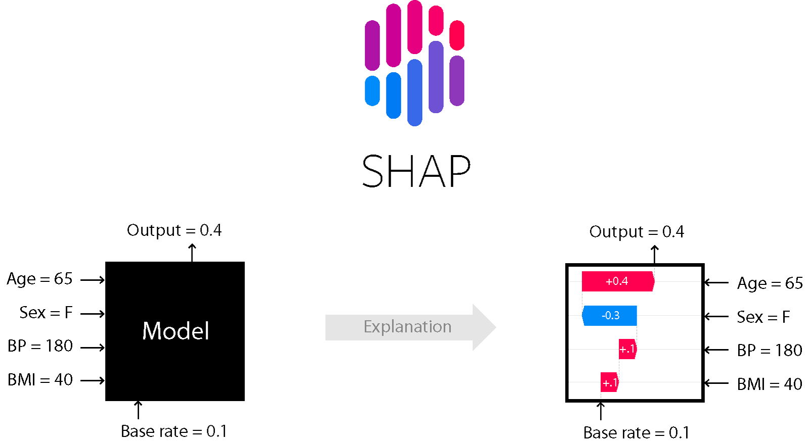
局部解釋 (Local Explanation): 對於模型給出的每一個預測，SHAP 值可以量化每個輸入特徵對該預測結果的貢獻大小和方向（是推高還是拉低了預測值）。
全局解釋 (Global Explanation): 通過匯總多個樣本的 SHAP 值，可以了解每個特徵對模型整體輸出的平均影響力。
SHAP 值提供了一種相對公平且一致的方式來分配特徵的貢獻，有助於理解複雜模型的行為。
#50
★★
哪種機器學習方法特別適用於學習輸入數據的低維表示（嵌入），常用於降維、視覺化或作為其他模型的輸入特徵？
答案解析
自動編碼器是一種非監督式的人工神經網路，其目標是學習輸入數據的有效編碼（表示）。它由一個編碼器 (Encoder) 和一個解碼器 (Decoder) 組成。編碼器將輸入數據壓縮到一個低維的潛在空間表示（瓶頸層 Bottleneck Layer），而解碼器則嘗試從這個低維表示中重構原始輸入。通過訓練模型最小化重構誤差，瓶頸層的輸出（即輸入數據的低維嵌入）被認為捕捉了數據的主要特徵。這種低維表示可以用於降維、數據視覺化、去噪或作為下游任務（如分類）的輸入特徵。
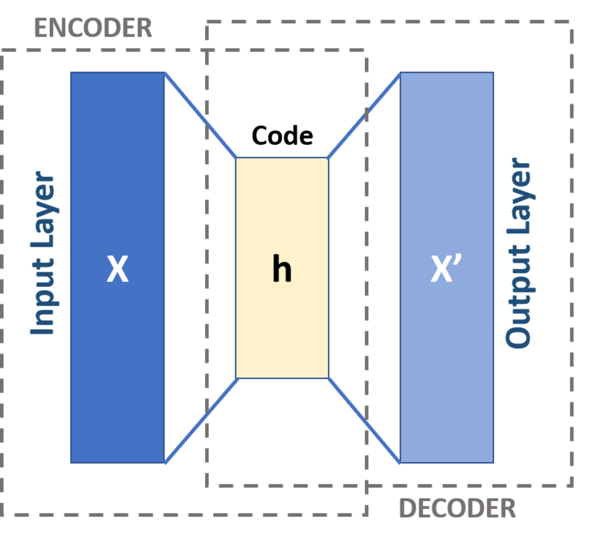
沒有找到符合條件的題目。
↑